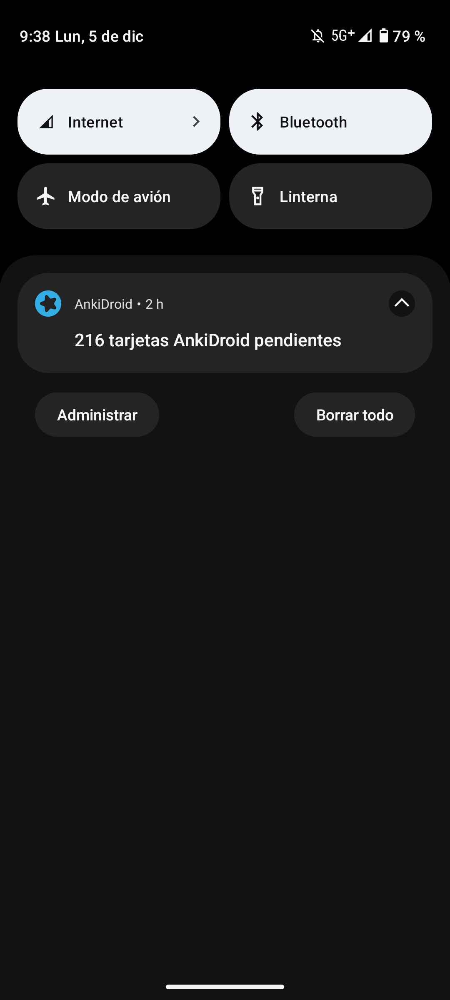

I've mostly struggled with 换，鞋，& 懂。
换 means to change, or switch.
鞋 is the word for shoe, or shoes.
懂 is word for understand.
Here's how I overcame my difficulties with these characters!
My issue with 换 was I could never recall its pronunciation.
For some reason, it was more difficult with this one than 90 percent of other characters.
I had this same issue with 种。
Using the Ankidroid app was hugely helpful. After doing Ankidroid for 3 days, I got a good hold on it.
|  |
With 鞋, I kept mixing it up with 裤, and it was annoying to write.
I overcame this with practice.
I wrote it repeatedly, on my hand with my finger, in my head, and in the assigned writing.
Every time that I wrote it, I would say it aloud and recall what it meant.
My friends got a little annoyed with me because I was doing this repeatedly. Lol.